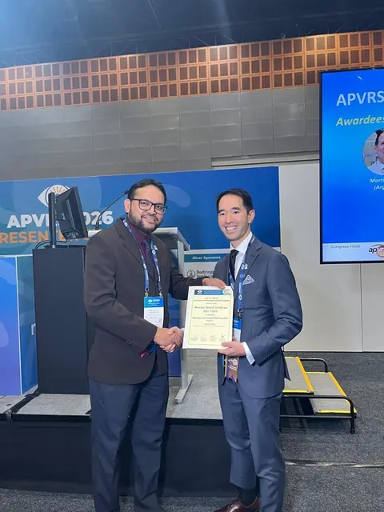

2026
Best Abstract Award
Asia Pacific Vitreo-Retina Society Congress, Gold Coast, Australia
Peer-reviewed papers, case reports and conference work by Dr. Md. Afzal Mahfuzullah — Associate Professor (Vitreo-Retina), Bangladesh Medical University.

Asia Pacific Vitreo-Retina Society Congress, Gold Coast, Australia
Best research work — Ophthalmological Society of Bangladesh Conference
Ophthalmological Society of Bangladesh (OSB) Conference
Dr. Afzal's name is highlighted in every author list. Filter by subject or search by title, journal or co-author.
Try another subject or clear your search.
Reach Dr. Afzal's team for academic work, second opinions or retina consultations.